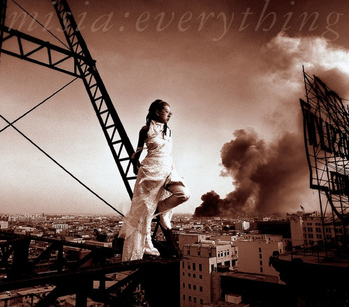

안녕하세요 라보엠입니다.
넷플릭스에 일본의 옛날 드라마 야마토 나데시코가 추천이 떠서 우연히 보게 되었습니다. 오프닝에 이 노래가 나와서 추억속에 잠겼습니다. 한 때 많이 들었던 노래였거든요. Everything은 일본의 실력파 가수 Misia(미샤)가 2000년 10월 25일에 발표한 7번째 싱글입니다. 이 곡은 Misia의 대표곡이자 21세기 일본 여성 가수의 베스트셀링 싱글로 자리매김했습니다.

MISIA - Everything
Everything은 서정적인 피아노 선율로 시작해 웅장한 오케스트라 편곡으로 발전하는 구조를 가지고 있습니다. Misia의 파워풀하면서도 섬세한 보컬이 곡의 감동을 더합니다. 특히 후렴구의 Everything 부분에서 Misia의 폭발적인 고음이 인상적입니다.
Everything은 발매 직후 오리콘 차트 1위에 올랐고, 4주 연속 정상을 지켰습니다. 이는 Misia의 커리어에서 가장 큰 히트곡이 되었습니다. 2000년 연간 차트 14위, 2001년 연간 차트 12위를 기록했고, 누적 판매량은 약 188만 장에 달합니다.
이 곡은 인기 드라마 "야마토 나데시코(やまとなでしこ)"의 주제가로 사용되었습니다. 드라마의 성공과 함께 "Everything"의 인기도 급상승했고, 이는 곡의 장기 히트로 이어졌습니다.
내 사랑 사쿠라코 | 넷플릭스
가난이 싫어서, 어떻게든 돈 많은 남자와 결혼하려는 여자. 그러던 어느 날, 한 수학자를 만나고, 이 남자야말로 자신이 원하는 걸 다 줄 수 있을 거라는 착각에 빠진다.
www.netflix.com
가사와 메시지
すれ違う時の中で
あなたとめぐり逢えた
不思議ね 願った奇跡が
こんなにも側にあるなんて
逢いたい想いのまま
逢えない時間だけが
過ぎてく 扉すり抜けて
また思い出して
あの人と笑い合う あなたを
愛しき人よ 悲しませないで
泣き疲れて 眠る夜もあるから
過去を見ないで 見つめて
私だけ
You're everything
You're everything
あなたが想うより強く
やさしい嘘ならいらない
欲しいのはあなた
You're everything
Everything
Everything
どれくらいの時間を
永遠と呼べるだろう
果てしなく遠い未来なら
あなたと行きたい
あなたと覗いてみたい その日を
愛しき人よ 抱きしめていて
いつものように やさしい時の中で
この手握って 見つめて
今だけを
You're everything
You're everything
あなたと離れてる場所でも
会えばきっと許してしまう
どんな夜でも
You're everything
You're my everything
あなたの夢見るほど強く
愛せる力を勇気に
今かえていこう
Everything
Everything
Everything
Everything
Everything
Everything
You're everything
You're everything
あなたと離れてる場所でも
会えばいつも消え去って行く
胸の痛みも
You're everything
Oh my everything
あなたが想うより強く
やさしい嘘ならいらない
欲しいのはあなた
You're everything
You're everything
You're everything
My everything
Misia가 직접 작사한 이 곡의 가사는 우연한 만남과 사랑의 기적을 노래합니다.
"스쳐지나가는 시간 속에 당신과 만났어요
그토록 바랬던 기적이 곁에 있다니"
이 구절은 운명적인 사랑의 만남을 아름답게 표현하고 있습니다. 가사 전체를 관통하는 주제는 영원한 사랑에 대한 갈망과 현재를 소중히 여기는 마음입니다.
맺음말
Misia의 "Everything"은 단순한 히트곡을 넘어 J-Pop 역사에 한 획을 그은 명곡입니다. 아름다운 멜로디, 감동적인 가사, Misia의 뛰어난 보컬이 완벽한 조화를 이룬 이 곡은 발매 후 20년이 지난 지금까지도 많은 사람들의 사랑을 받고 있습니다. Everything은 우리에게 사랑의 소중함과 현재를 살아가는 용기를 전해주는 노래입니다. 이 곡을 들으면서 우리는 자신의 인생을 떠올리고, 인생의 소중한 순간들을 다시 한 번 되새겨볼 수 있을 것입니다.